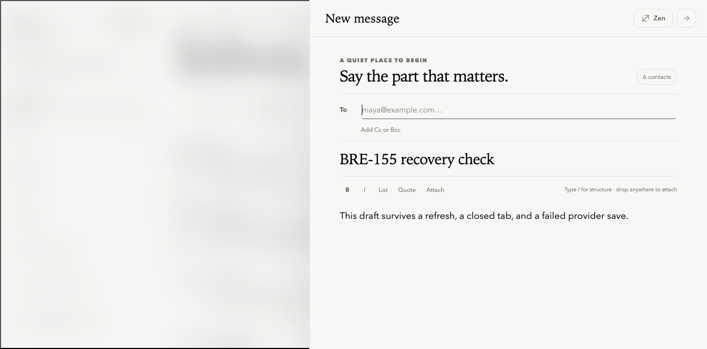
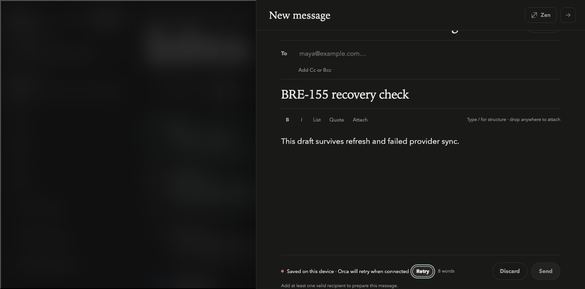

Writing stays safe.
Draft text is written to the device, debounced to Orca, and mirrored to Gmail without blocking typing. Stale revisions stop for an explicit recovery choice; provider failures remain honestly labeled and retryable.
420 msDebounced remote autosave window.
2 layersImmediate device recovery plus revisioned API durability.
0Scoped axe violations in the verified compose panel.
Fast manual check
- Run
bun run devand open compose. - Type a subject and body. Confirm the status moves through Saving to Saved to Orca (and Gmail when compose access exists).
- Refresh. Confirm the exact subject and body return.
- Set the browser offline, edit again, and confirm the copy says it is safe on this device and will retry.
- In two tabs, edit the same revision. Confirm the stale tab offers “Use newer version” or “Keep mine as a new draft.”
- Discard. Confirm the prompt names Orca and Gmail; a failed Gmail cleanup must keep the Orca draft available for retry.
Captured browser evidence


Automated evidence
bun run typecheck— all workspaces pass.bun run test— 92 tests pass across shared, web, and API.bun run build— production build passes.- Headless Chromium reload recovery — exact subject and body preserved.
- Scoped axe audit in dark mode — 0 violations, 0 incomplete checks.